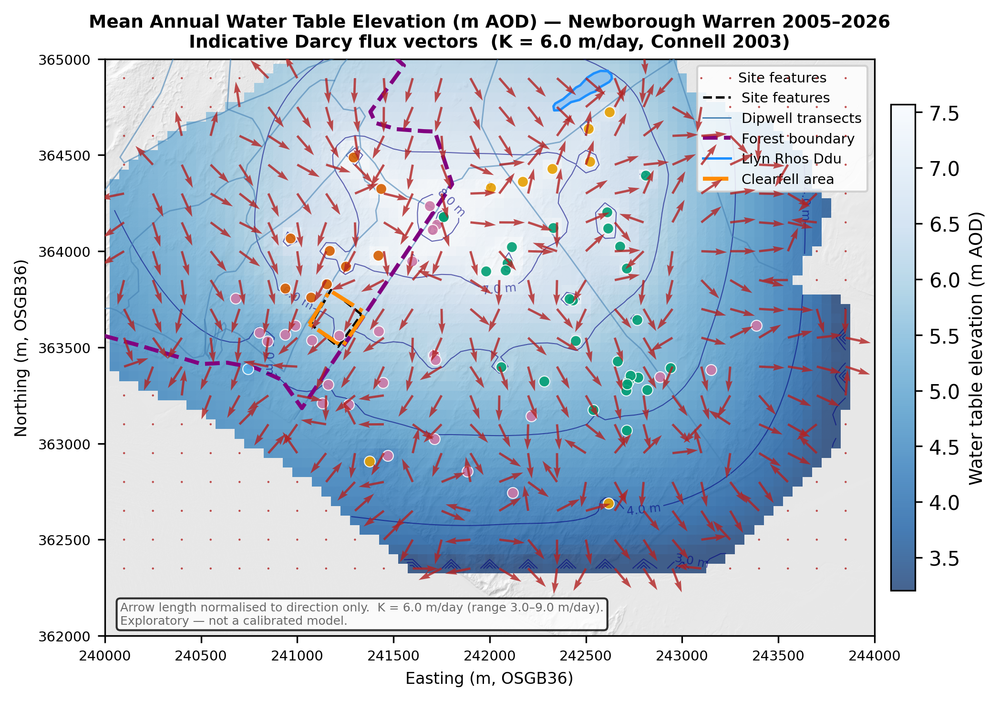

Mean head + Darcy flux
Baseline2005–2026 observed mean
Image not found:
Baseline — Mean head + Darcy flux
Baseline — Mean head + Darcy flux
Full clearfellβ₂ ×1.15, interception removed
Image not found:
Full clearfell — Mean head + Darcy flux
Full clearfell — Mean head + Darcy flux
Forest thinning 50%Partial removal effect
Image not found:
Forest thinning 50% — Mean head + Darcy flux
Forest thinning 50% — Mean head + Darcy flux
Broadleaf conversionβ₁ ×0.90 in autumn

Climate — dryΔP −10%, ΔPET +10%
Image not found:
Climate — dry — Mean head + Darcy flux
Climate — dry — Mean head + Darcy flux
Climate — wetΔP +10%, ΔPET −5%
Image not found:
Climate — wet — Mean head + Darcy flux
Climate — wet — Mean head + Darcy flux